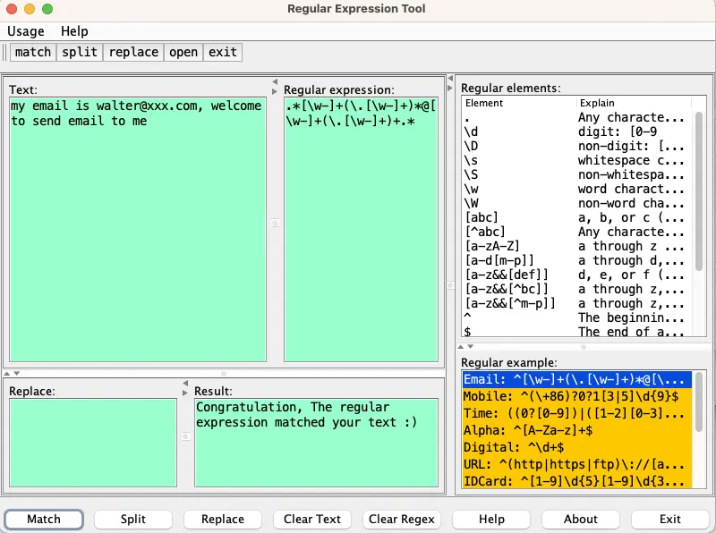
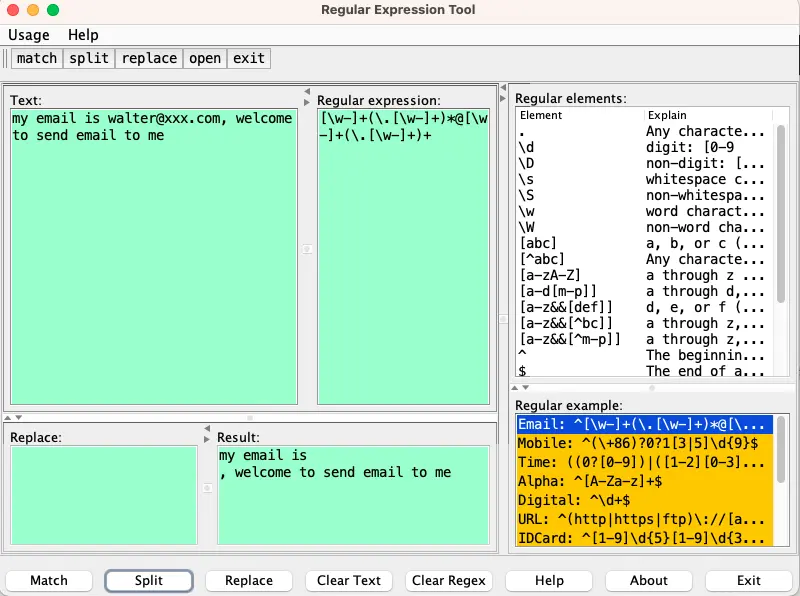
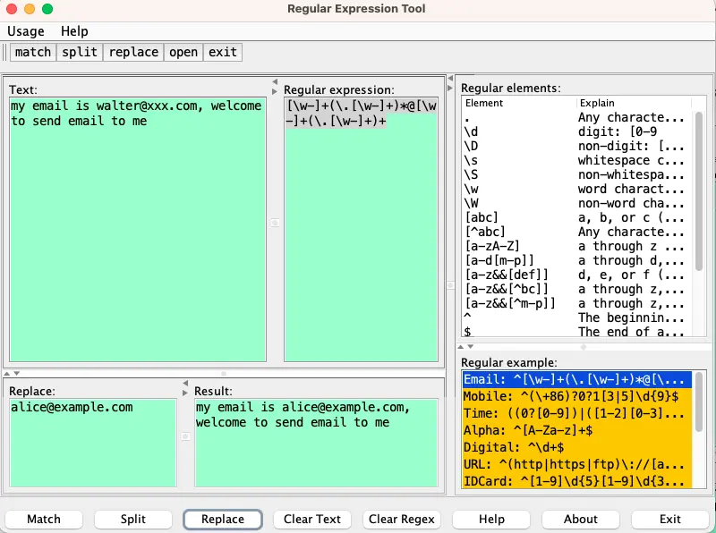

正则表达式助手
Posted on 一 10 6月 2024 in Journal
| Abstract | 正则表达式助手 |
|---|---|
| Authors | Walter Fan |
| Category | tool |
| Status | v1.0 |
| Updated | 2024-06-10 |
| License | CC-BY-NC-ND 4.0 |
1. 为什么要写这个小工具
正则表达式在日常编程中用得很多, 可是它挺难记的, 写得不好, 就有可能出错或者效率不高
2. 简单介绍一下这个工具
这是一个我很久以前编写的用于正则表达式编写和测试的小工具。
它对我很有帮助，也许其他人也需要，所以我从旧的代码库中提取出来，并将其构建成为一个独立的工具。
- 代码仓库
- https://github.com/walterfan/regex_helper
- https://gitee.com/walterfan/regex_helper
下载链接:
- windows: https://gitee.com/walterfan/regex_helper/blob/main/target/regex_helper.exeå
- linux/mac: https://gitee.com/walterfan/regex_helper/blob/main/target/regex_helper
基本功能
- 左边第一个文本框是要匹配的文本, 左边第二个文本框是正则表达式文本框
- 左边下方第一个文本框是要替换正则表达式的文本, 左边下方第二个文本框是正则表达式匹配, 分割或替换的结果
- 右边是常用的正则表达式的基本元素和常用示例
以 email 的正则表达式 [\w-]+(\.[\w-]+)*@[\w-]+(\.[\w-]+)+ 为例
匹配正则表达式

用正则表达式切割字串

以正则表达式来替换字串

帮助编写正则表达式
在右边的列表框中还列出了正则表达式的基本元素和常用示例, 点击即可填入正则表达式文本框
3. How
3.1 如何构建
1) 准备工作
确保您的系统已安装以下软件： - Java Development Kit (JDK) 1.8 或更高版本 - Apache Maven 3.6.0 或更高版本
2) 克隆项目
首先，克隆项目到本地机器：
git clone https://github.com/walterfan/regex_helper.git
cd regex_helper
3) 使用 Maven 编译项目
运行以下命令来编译项目：
mvn package
这将会下载所有依赖并构建项目，生成一个可执行的 JAR 文件。
4) 生成平台特定的可执行文件
项目使用了 really-executable-jar-maven-plugin 和 Launch4j 插件来生成特定平台的可执行文件。
-
生成可执行 JAR 文件：
sh mvn package生成的 JAR 文件位于target/regex_helper-1.0-SNAPSHOT.jar。 -
生成 Windows 可执行文件 (.exe)：
sh mvn launch4j:launch4j生成的 Windows 可执行文件位于target/regex_helper.exe。
5) 运行应用程序
- 运行可执行 JAR 文件：
sh java -jar target/regex_helper-1.0.jar -
在Windows上运行可执行文件： 双击
target/regex_helper.exe文件。 -
在 linux/macos 上运行可执行文件： 双击
target/regex.exe文件。
项目目录结构
src/main/java：Java 源代码。src/main/resources：资源文件，如配置文件。target：编译输出目录，包括生成的 JAR 文件和可执行文件。
依赖管理
项目的依赖由 Maven 管理，主要依赖包括：
- javax.swing：用于创建图形用户界面。
- commons-codec：用于编码和解码操作。
插件配置
- really-executable-jar-maven-plugin：用于生成可以直接执行的 JAR 文件。
- Launch4j：用于将 JAR 文件打包成 Windows 可执行文件。
有关详细的插件配置，请参考 pom.xml 文件中的插件配置部分。
通过以上步骤，您可以轻松地编译和运行编码助手 (Regex Helper) 项目。如果需要更多信息或遇到问题，请访问项目的 GitHub 仓库。
后记
这个小工具是十多年前写的, 后来断断续续更新了一点点, 可能对大家有点用处, 如果有问题或者新需求, 欢迎给我留言
本作品采用知识共享署名-非商业性使用-禁止演绎 4.0 国际许可协议进行许可。